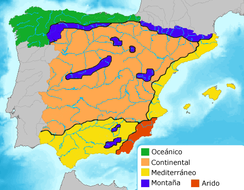

Introducere
Repere geografice
Clima
Geografia politică
Vegetația
Fauna
Relieful
Rețeaua hidrografică
|
Clima
În cadrul peninsulei Iberice, datorită condițiilor orografice și a poziției și orientării țărmurilor se poate vorbi de microclimate locale. Cele mai importante dintre acestea sunt:

Climatul temperat oceanic: se întâlnește în Galicia, Asturias, Cantabria, Țara Bascilor și Navarra. Se caracterizează prin precipitații abundente, repartizate uniform de-a lungText aldinul anului și prin temperaturi moderate, atat iarna cât și vara (10,4 °C media lunii Ianuarie și 19,2 °C media lunii August și 1.008mm/an pentru orașul La Coruña). Climatul temperat continental: se întâlnește în Castilla și Leon, Madrid, La Rioja, Castilla-La Mancha, Extramadura și Andalucia. Se caracterizează prin precipitații reduse, repartizate neuniform de-a lungul anului și prin amplitudini termice mari de la zi la noapte, precum și de la un anotimp la altul. Climatul mediteraneean: se întâlnește în Catalonia, Valencia, Murcia, Andalucia, precum și în Insulele Baleare. Se caracterizează prin precipitații ce scad în cantitatea dinspre nordul spre sudul zonei (640mm/an la Barcelona, 524mm/an la Tortosa, 454mm/an la Valencia, 336mm/an la Alicante, 196mm/an la Almeria). Aceste precipitații cad preponderent toamna, sub formă de aversă. Temperaturiile sunt relativ ridicate atât vara (23-27 °C media lunii August) cât și iarna (8-12 °C media lunii Inuarie), amplitudinea termică dintre cele două anotimpuri fiind mai ridicată decât în cazul climatului temperat oceanic, dar mai scăzută decat în cazul climatului temperat continental. Climatul subtropical: se întâlnește în Insulele Canare și pe coasta estică a Andaluciei (supranumită și "Costa del Sol" - Coasta Soarelui). Se caracterizează prin temperaturi ridicate tot timpul anului (17,9 °C media lunii Inuarie și 25,1 °C media lunii August, pentru localitatea Tenerife), precipitații abundente (influențate de condițiile orografice locale) și amplitudini termice reduse între iarnă și vară. Microclimatul munților înalți: se întâlnește sporadic, în cazul masivelor muntoase ce depașesc 2000m înălțime (Munții Pirinei, Munții Cantabrici, Cordiliera Iberică și cea Centrală, Sierra Morena etc.) Acest climat se caracterizează prin precipitații ceva mai abundente și temperaturi mai reduse de-a lungul anului. Microclimatul temperat continental excesiv: se întâlnește sporadic în Madrid, Castilla-La Mancha și Castilia și Leon (suprapunându-se astfel Mesetei Centrale). Se caracterizează prin precipitații foarte scăzute (de obicei sub 250mm/an), repartizate neuniform de-a lungul anului, temperaturi scăzute iarna și ridicate vara (amplitudinii termice ridicate) precum și printr-o evapotranspirație excesivă, lucru care-și pune amprenta asupra vegetației, solului și inclusiv faunei.
|
{kind=link}